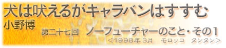

|  |
| 私はバスの中で、ひたすら水を飲み続けていた。 モロッコを南下するどこまでも続く乾ききった山道。痛いほどの日射しで車内温度が上がっている上に、登りと下りを繰り返す激しい起伏の道によって乗客が車酔いし始め、嘔吐物の臭いがだんだん充満してくるのがわかった。窓を開けても、吹き込んでくるのは信じられないほど乾ききった熱風で、閉めれば嘔吐物の臭いで窒息しそうになる。私はひっきりなしに水を飲み続けながら、体をよじってみたり、少しだけ窓を開けて、本でパタパタと扇いだりしてみた。 口で息をしてもみたが、喉がすぐカラカラになった。どうしたって無理なものは無理だった。この苦しさから逃れるすべはない。 このバスに乗っている間はずっとこのままだ。このバスはどこかにたどり着くのだろうか。それさえも朦朧とした意識の中で確信が持てなくなってきた。 これは絶望だ。過去も今も未来もない、無限の絶望に感じられた。私は頭と体のスイッチを切りたくなった。 私の生まれた村は小学校までしかなく、中学校は隣の町にあった。村は絵に描いたような里田舎で、自然の中でのんびりとした少年時代を幼なじみと過ごした。それは幸せな時間と場所だったのだろうと思う。 だが、中学校時代に通った町の雰囲気は全く異なっていた。県人以外の人にはまったく存在する価値のない、どうでもいい地方の、おまけに中心から外れた町だった。当時日本はバブル経済の時代に突入していたが、そこだけはどことなく暗く、つねどんよりとしていて、逃げ場もなく、どこにも行けない空気につつまれていた。思春期の不安定な気持ちと合間って、まさに「ノーフューチャー」という名がふさわしい雰囲気だった。ともかくこの町には色んな未来への可能性を立ち塞ぐ大きな塀のようなものがあって、でもそれを越える方法を見つける気力も萎えさせるような場所だった。そんな町の中学校に行くのは、苦痛でしかなかった。 バスの中では、繰り返し聞きたくもないモロッコポップミュージックが大音量でなり続けている。この暑さと臭気では、頭と体のスイッチを切ることはできない。だが、行き場のない中学生時代を過ごしてきた私には、圧倒的な苦痛をやり過ごす術があった。 まず、とにかくわざと意識をぼんやりさせていく。目の焦点をどこにも合わせず、何も考えないでただひたすら時間という大きなものの存在を忘れてみる。そうすると、すっぽりと記憶を失うことが出来るのだ。苦痛と生きなければいけないとき一番大切なことは、記憶をなくすことだ。 だが、この時ばかりは、なかなかうまくいかなかった。精神的にコントロールができても、結局は喉の渇きという肉体的な苛酷さが現実を強烈に呼び起こ す。ペットボトルを取り出して喉の潤すその瞬間から、喉が乾燥していくのがわかる。そういえば、随分長い間トイレ休憩がない。飲んだ水は汗になり、汗はすぐに蒸発するので、トイレに行く必要がないのだ。ペットボトルの水もすっかりなくなってきた。こんどは本当に意識が朦朧としてきたが、また喉が渇いて現実に連れ戻された。いっそバスを降りたいと思ったが、窓の向こうには見渡す限り何もない風景が続いている。降りたところで何も変わらない。この暴力的なまでの暑さの中で歩くことを考えると、ここにいるしかない。 朦朧とした意識のなか、ふたたび中学生時代を思い出した。中学校１年の終わりから、多くのクラスメートがヤンキーになっていったが、私はならなかっ た。ヤンキーはノーフューチャーな空気を受け入れている気がして、それが嫌だった。 当時この町では、頭のいい人は進学校の公立高校へ行き、それ以外の人や、進学するお金がない人は公立商業・工業高校、あるいは大学進学を目的としない私立高校へ行くことになる。それはヒエラルキーだった。区別の始まりである。しかもベビーブームである私の世代は、高校入試も大学入試も軒並み過去最高の高倍率だった。バブル経済に取り残されたこの町では、勉強するのも嫌、成績を良くしようという気力もない、という状態の人間にしてみれば、ヤンキーはその存在のシンプルさにおいて魅力的にうつる。ヤンキーになること。それは、自分の身の丈を知り始めるとき、社会のなかで自分が出来ることに対して、見切りをつける作業だ。ヤンキーになれば一気に仲間も先輩も後輩も出来る。これまでと違う誰かになれる感覚が得られるのは、彼らにとってある種の救いだったろう。 私は自分がどんな人間なのかわからなかった。というか、ノーフューチャーな場所にいて、自分の身の丈を自分で知るのが怖かった。だから、頭のスイッチをオフにして、それ以上考えるのをやめていた。私には、中学校時代の記憶がほとんどない。担任の名前も、同級生の名前も思い出せない。 外を歩くよりは少しはましとはいえ、バスの中は相変わらず窒息しそうな空気に包まれ、前にも増して吐く人が増えてひどい臭いだった。 そして昼過ぎから激しい熱風と共に砂嵐がやってきて、窓に小さな砂がひっきりなしに降り注ぐ嫌な音が聞こえた。どうやってもキチンと閉めることの出来ない窓の隙間から砂が注ぎ込まれてきた。さらさらと砂が足にこぼれ落ちているのを見ていると砂時計のように見えた。砂が、体中で唯一汗の残っているバスのシートと体の密着点に付着して、ますます絶望的な気持ちになった。水を飲もうと口を開けると砂が入り、舌や喉にこびりついて水を飲むときにうがいをして飲み込んだ。 ふと目を膝の上に向けるとこんもりと砂が降り積もっていた。そこからずっと降り積もり続けている砂を眺め続けた。そうするとなぜだか分からないが少しずつ気が楽になってきた。砂が積もるように時間は過ぎ、バスは必ず自分の目指した目的地に着くはずだ、だからもう少しだけ現実を見つめてみようと考えた。そう考えたらなんとか最後まで乗れそうな気になってきた。 中学校時代、私はヤンキーでもなかったし、部活もやってなかったので、仲間もほとんどいなかった。頭もわるかったし、やりたいことも、大きな夢もなかった。それでも、人生の第一歩を決めなくてはならないときがやって来る。 私は、高校への進学面接の時、私は初めて自分の人生について考えた。決めたのは、ここではないどこかにいくこと。そして、一人で出来る仕事を見つけ、高校を卒業してから細々と続づけて行きたいということだ。それは、自分の身の丈を知った上で、頼れる情報も経験もない地方の中学生に出来る、大きな決定だった。自分には何もないけれど、それでも自分で自分を信用してみようと思った。 そのときから、考えずにいることをやめた。 中学校に入学以来止まっていた記憶が、この瞬間からまた始まっている。また記憶がサラサラと私に降り積り始めた。 絶望のなかで、膝に降り積もる砂で時間が過ぎるのを確認したこと。ほぼ０（ゼロ）だった自分を認め、それでも進みたい方向へ向かうために、経験を積み重ねていこうとしたこと。それは、ノーフューチャーな場所から、可能性を信じて、自分だけが描く明るい未来へと進む作業だったのかもしれない。 |
| 小野博（おの・ひろし） 1971年岡山生まれ。写真家・映像作家。多摩美術大学彫刻科卒業。1992年から世界を移動しながら作品制作をしている。1999年コニカ写真奨励賞を受賞して50カ国を巡り「地球の線」を制作。2001年コニカプラザ、反-記憶展・横浜美術館、Twilight Sleep展・Instituto Giapponese di Cultura, Roma（Italy）で発表する。現在アムステルダム在住。VOCA賞奨励賞受賞。 |